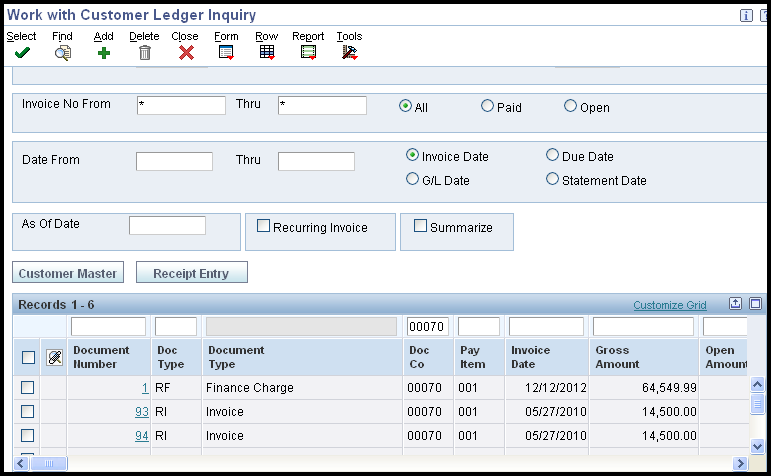
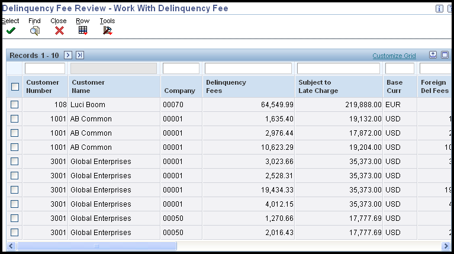
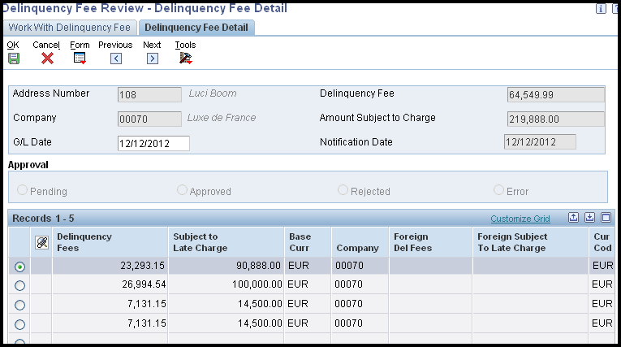

This document details the steps to process and purge delinquency fees in JD Edwards EnterpriseOne Accounts Receivable.
Scope
This document is intended for users setting up and processing deliqnuency fees.
Details
Delinquency Fee Overview
When customers are delinquent in paying their bills, you can apply fees to past-due open amounts and also choose to apply late payment fees.
Delinquency fees are created by running the Print Delinquency Fees version (XJDE0003) of the Credit Analysis Refresh program (R03B525), or a copy of this version. The Print Delinquency Fees version has predefined processing options set for generating fees and calls the A/R Delinquency Fee Journal (R03B22) (also known as A/R Finance Charge Journal) to generate the fees. It also has an option to call the Late Payment Delinquency Fees (R03B221). The system generates fees based on the delinquency policy that is assigned to the customer. See How To Set Up Delinquency Notices and Fees (P03B2501, P03B2801) for further information on setting up delinquency fees.
Credit Memos and Unapplied Receipts
The system considers credit memos and unapplied receipts when delinquency fees are processed. However, the system does not process a fee if the customer has an overall credit balance. The system processes a fee for the credit memo or unapplied receipt to offset the amount of a fee that is generated for an invoice. This process ensures that customers are not overcharged for invoices to which existing credit memos have been applied, and it negates the necessity of applying credit memos to invoices prior to generating fees.
Taxes
You can include tax information on delinquency fee invoice records by using the processing options for the A/R Delinquency Fee Journal program (R03B22).
Late Payment Fees
You can generate late payment fees, which assess finance charges on late payments either by specifying the corresponding processing option in the Generate Delinquency Fees program or by running the Late Payment Delinquency Fees program (R03B221) directly from batch versions. You cannot access the Late Payment Delinquency Fees program from a standard EnterpriseOne menu. When you generate late payment fees, the system compares the invoice due date of the Receipt Detail record (F03B14) with the effective date of the policy (fee instructions) to determine which policy to use to retrieve the rate that it uses to calculate the fee. No output is created for R03B221 but an 'RF' document will be created on the Customer Ledger (F03B11) and can also be viewed in Delinquency Fee Review (P03B22).
Generating Delinquency Fees
Prerequisites:
Set up delinquency policy and fee instructions.
Attach policy to customer master record.
Set up RFC and RFD Automatic Accounting Instructions (AAIs).
Ensure that the Delinquency Fees option is selected on the Collection tab of the Customer Master Revision form (P03013).
Navigate to Cash Analysis Refresh (R03B525). Run version XJDE0003 or a copied delinquency fee version of the R03B525 that has processing options set for delinquency fees.
When delinquency fees are generated, the system:
Uses the policy to determine how many days past the due date the invoice must be in order to generate a fee.
Uses the policy to determine whether to calculate the fee on Open Amounts, Paid Late Amounts, or on fees previously generated, such as a compound fee.
Uses the policy to determine the fee percent to be applied to the open amount of the invoices. Fees are prorated by the number of days.
Generates one fee per customer for all eligible invoices.
If Generate Delinquency Fees is run in proof mode, the system will produce an A/R Delinquency Fee Journal (R03B22) detailing the invoices selected for a fee and the amount of the fee that will be produced when the program is run in final mode. Fees are calculated using the following formula: ((Interest rate/YYY) x .01) x Invoice Amount x Number of days late, where YYY = 365 days (or the number of days in a year).
If Generate Delinquency Fees is run in final mode, the system:
Creates a delinquency fee (RF) document in the Customer Ledger table (F03B11) for the total amount of all fees generated for all eligible invoices for the customer.
Creates a record in the A/R Fee Journal History table (F03B22) and the A/R Fee History Detail table (F03B23).
Updates the LFCJ (Last Fee Date) field in the Customer Ledger table (F03B11) and the A/R Check Detail table (F03B14).
Prints an A/R Delinquency Fee Journal (R03B22).
After you generate fee invoice records, you must post them. When you post fees, the system generates a record in the Account Ledger table (F0911) using the automatic accounting instruction (AAI) items RFC and RFD to determine the revenue account and receivables trade account to use. If you select the 'Collection Manager Approval Required' option in the policy, the collection manager must approve each fee before the system generates it for the customer. The system sends workflow messages to the collection manager that is defined in the customer record. The collection manager can access the Work With Delinquency Fee form (P03B22) from these messages to approve or reject the fees. See the Approving Delinquency Fees section below for further information.
This is an example of the A/R Delinquency Fee Journal (R03B22) which is produced

This is an example of the 'RF' fee document created on the customer ledger which is viewed here in Customer Ledger Inquiry screen (P03B2002).
Setting Processing Options for Credit Analysis Refresh (Fees Tab)
Fees Tab - These processing options specify how the system generates delinquency fees. You can specify options such as generation mode (proof or final), version, the payment terms to assign to the fee record and its currency.
Print Fee Report - Specify how the system generates delinquency fees. Values are:
Blank: Do not generate delinquency fees.
0: Proof Mode. The system generates an A/R Delinquency Fee Journal, which is a listing of the fees that the system will generate when you run the program in Final Mode. The system does not update any tables.
1: Final Mode. The system generates an RF invoice document in the amount of the fee in the Customer Ledger (F03B11) table. The system also generates records in the A/R Fee Journal History (F03B22) and A/R Fee Journal History Detail (F03B23) tables and prints an A/R Delinquency Fee Journal. The system updates the Last Fee Date in the Customer Ledger (F03B11) and A/R Check Detail (F03B14) tables with the date that fees were generated. Subsequent fees for the same invoice will not be generated until the number of days between fees has elapsed, as defined in the policy.
Version for Fee Processing - Specify the version of the A/R Delinquency Fee Journal program (R03B22) that the system uses to generate delinquency fees. If you leave this processing option blank, the system uses version ZJDE0001.
NOTE: The A/R Delinquency Fee Journal has associated processing options. See section below.
G/L Date - Specify the G/L date that you want the system to assign to delinquency fee (RF) invoice records. The system generates these invoices when you process delinquency fees in Final Mode. If you leave this processing option blank, the system uses today’s date.
Late Payment Delinquency Fees - Use this processing option to run the Late Payment Delinquency Fees program (R03B221), which generates a delinquency fee on invoices that were paid after the due date. Values are:
Blank: Do not calculate fees on amounts that were paid after the due date.
1: Calculate fees on amounts that were paid after the due date.
NOTE: You must have the option 'Calculate On Paid Late Amounts' activated in the policy in addition to setting this processing option.
Version for Late Payment - Specify the version of the Late Payment Delinquency Fees program (R03B221) that you want the system to use to generate fees on invoices that were paid after the due date. If you leave this processing option blank, the system uses version ZJDE0001.
NOTE: The Late Payment Delinquency Fee program has associated processing options. See section below.
Payment Terms Code - Specify the Payment Terms Code that you want the system to assign to the delinquency fee (RF) invoice record.
Currency of Fees - Specify the currency that the system uses to generate delinquency fee invoice records (document type RF). The system uses the most recent exchange rate from the Currency Exchange Rates table (F0015) to calculate the currency fee amount. Values are:
1: Company. Generate the fee in the currency that is assigned to the company record that appears on the invoice.
2: Customer. Generate the fee in the currency that is assigned to the A/B Amount Codes field (CRCA) of the customer record in the Customer Master by Line of Business table (F03012).
3: Invoice. Generate the fee in the currency that is assigned to the invoice at the time that the invoice was entered.
NOTE: Regardless of the option that you select, the system generates one fee invoice (RF) record per currency code for each company. For example, if companies 00001 and 00003 are assigned a currency code for Canadian dollars (CAD), the system generates two fee invoices: one for company 00001 for CAD and one for company 00003 for CAD.
Setting Processing Options for A/R Delinquency Fee Journal (R03B22)
Taxes Tab - These processing options specify how the system processes tax information on delinquency fees.
Generate Fees with Taxes - Specify whether to generate delinquency fees with taxes. Values are:
Blank: Do not generate delinquency fees with taxes.
1: Generate delinquency fees with taxes.
Tax Explanation Code - Specify the tax explanation code to assign to delinquency fee records (F03B11, doc type RF). If you leave this processing option blank, the system uses the tax explanation code that is assigned to the customer master record in the Customer Master by Line of Business table (F03012).
Tax Rate/Area - Specify the tax rate and area to assign to delinquency fee records (F03B11, doc type RF). If you leave this processing option blank, the system uses the tax rate and area that are assigned to the customer master record (F03012).
Setting Processing Options for Late Payment Delinquency Fees (R03B221)
Late Payment Tab - These processing options specify whether to process late payment fees in proof or final mode, as well as the data to assign to the fee invoice records.
Print Fee Report - Specify whether to run the program in proof or final mode. In proof mode, the system prints a report of the customers for whom a fee will be generated and the invoices that were paid late. In final mode, the system prints a report and updates the F03B22, F03B23, and F03B14 tables. Values are:
Blank: Proof mode. Print a report only; do not update any tables.
1: Final mode. Print a report and update the tables.
Version For Fee Processing - Specify the version of the A/R Delinquency Fee Journal program (R03B22) for the system to use to calculate late payment fees. If you leave this field blank, the system uses the default version, ZJDE0001.
NOTE: The A/R Delinquency Fee Journal program has associated processing options.
G/L Date - Specify the G/L date that you want the system to assign to the invoice fee records (RF), which the system generates when you process late payment fees in final mode. If you leave this field blank, the system uses the current date.
Payment Terms Code - Specify the payment terms code that you want the system to assign to invoice fee records (RF), which the system generates when you process late payment fees in final mode.
Currency of Fee - Specify which record the system uses to determine the currency of the invoice fee record (RF). The system creates an invoice fee record when you process late payment fees in final mode. If you leave this field blank, the system uses the default value '1' (Company). Values are:
1: Company. The system creates the late payment fee in the currency that is assigned to the company that was entered on the invoice. The currency of the company is defined in the (Company Constants) F0010 table.
2: Customer. The system creates the late payment fee in the currency that is specified in the A/B Amount Codes field (CRCA) of the customer record in the Customer Master (F03012) table.
3: Invoice. The system creates the late payment fee in the currency that is specified in the Currency field (CRCD) of the invoice record in the F03B11 table.
Data Selection for Delinquency Fees
To generate fees for a specific customer or based on some other criteria, change the data selection in the Generate Delinquency Fees program (R03B525), not the A/R Delinquency Fee Journal program (R03B22). However, if you are trying to also generate Late Payment Fees (R03B221), be aware that the data selection on the Data Selection on the Credit Analysis Refresh (R03B525) is not carried over to this report because the Payment Delinquency Fees (R03B221) runs on the Receipt tables (F03B13 and F03B14) whereas the Credit Analysis Refresh (R03B525) runs over the Customer Ledger (F03B11). Due to the mismatch in data being selected, the Late Payment Fee (R03B221) does not use the data selection specified in the Credit Analysis Refresh (R03B525). To get data selection for Late Payment Fees, there are the following workarounds:
Run both the processes separately.
in the data selection of R03B221 add your desired data selection and mention that version in R03B525 processing option.
NOTE: If you modify the data selection to generate fees for specific customers, set the processing option to suppress updating the Credit and Cash Management table (F03B15). Otherwise, the system updates the table according to the specified data selection, which might compromise the collection manager’s ability to perform daily collection activities.
Reviewing Delinquency Fees
You can review all fees which have been generated.

Navigate to Delinquency Fee Review (P03B22).
On Work With Delinquency Fee, click 'Find' to display all fees, or use the fields in the Query by Example (QBE) row to narrow your search criteria to a specific customer or a specific status, and click 'Find'.
Choose the fee that you want to review and click 'Select'.

On Delinquency Fee Detail, the system displays the following information about the fee record from the A/R Fee Journal History table (F03B22) in the header portion of the form:
Delinquency Fee - This is the amount of the fee record (document type RF).
Amount Subject to Charge - This is the total amount of the open invoices on which the fee was based.
Notification Date - This is the date on which the fee was generated.
G/L Date - G/L date assigned to the RF document through the R03B525 and R03B221 processing options
The system displays the individual invoice pay items, open amounts, and fee amounts from the A/R Fee Journal History Detail table (F03B23) in the detail portion of the form:
Delinquency Fees - This is the fee amount for the individual invoice record.
Subject to Late Charge - This is the amount of the invoice on which the fee was based.
Approving Delinquency Fees
It is necessary to approve Delinquency Fees only if Collection Manager Approval is indicated in the policy.
Click 'Find' to locate the account to review, and then select it.
Review the information by using the 'Detail' row exit, or click 'Select' depending on your release.
Use the appropriate row exit to either 'Approve' or 'Reject' the fee, or select the appropriate radio button, depending on your release.
Click 'OK'.
After the fees are approved, exit the Work with Delinquency Fee form. The Generate Delinquency Fee program (R03B22) is executed and the delinquency fees are created. Fees are not generated for items that have been rejected.
Purging Delinquency Fees
You run the Delinquency Fee Purge program (R03B222) to remove selected records from the A/R Fee Journal History table (F03B22) and A/R Fee Journal History Detail table (F03B23). The system does not write purged information to another table for archiving. If you want to retain purged information, back up the tables before purging them. The system purges fee records based on the date that you enter in the processing options. You also can purge all fee records that have been rejected, regardless of the date. You can also use data selection in conjunction with the processing options to purge selected records.
Navigate to Delinquency Fee Purge. You can run the Delinquency Fee Purge program (R03B222):
The system purges all fee records based on the date you enter in the processing options.
The system can also purge all fee records that have been rejected, regardless of date.
Data selection can be used in conjunction with the processing options to purge selected records.
The system does not produce a report of the purged records.
NOTE: The purge program does not remove records with a future date. To remove all the records in the F03B22 and F03B23 tables, consider using a data file utility.
Setting Processing Options for Delinquency Fee Purge (R03B222)
Date Tab - These processing options specify which records the system selects to purge.
Purge Date - Specify the date that the system uses to determine which delinquency fee records are purged from the F03B22 and F03B23 tables. The system purges all records for which the G/L date is on or before the date that you specify. If you leave this processing option blank, the system uses only the value that you specify in the Rejected Fees processing option to determine which records to purge.
Rejected Fees - Specify how the purge process handles rejected fees. Values are:
Blank: Use the purge date to determine which rejected fees are to be purged from the system.
1: Purge all the rejected fees from the system, ignoring the purge date in the Purge Date processing option.
Troubleshooting Tips
Tip 1: The majority of calls logged into Support are due to incorrect set up. See How To Set Up Delinquency Notices and Fees (P03B2501, P03B2801) and tip 3 below. If all set up is checked and confirmed and delinquency fees are still not generated, then the next step is to review your data to see how the F03B11 looks and how the data was created.
Tip 2: For releases Xe - ERP8.0: When running a batch application, on a fat client, where a string of UBEs are involved, such as fees, be sure to test locally on a fat client, as the version specs exist locally.
Tip 3: Use the following checklist to confirm set up is correct.
Verify the Customer Master is setup to generate fees.
Make sure the Apply Finance Charges Y/N field (RPAFC) is flagged with a 'Y' on each delinquent transaction record in the F03B11 table.
NOTE: This can be toggled per transaction through Speed Status Change (P03B114). When a transaction is created, the RPAFC value is assigned based on the (AIAFC) value on the customer master (F03012) record.
Make sure a valid policy is referenced on the Customer Master record's 'Collection tab'. Oracle Software support suggests to create a new policy and refrain from using STANDARD.
Make sure the difference between the Date: Age As Of processing option on the Aging tab behind R03B525 and the Days Between Fees on the delinquency policy sufficiently exceeds (by at least 1) the RPLFCJ date on the open item's F03B11 record.
Make sure the Minimum Amount on the policy for that particular Aging Category doesn't exceed the 'Calculated Fee per Item'. See enhancement Bug 10745893(Request to compare minimum amount to total open amount).
Make sure the 'Calculate on Open Amounts' check box is checked on the policy.
Make sure the customer doesn't have an overall credit balance.
Locate the Policy ID and update existing Customer Master Records - The PolicyNumberA (PLY) field in the A/R Delinquency Policy table (F03B25) is updated with a unique numeric reference at the time the policy is created. Retrieve the value of this field from the Customer Master by Line of Business (F03012) table for both the old and new policies. Locate all the F03012 records that have the PolicyNumberA (PLY) field updated with the ID of the old policy, and update the value of this field to the ID of the new policy. For example, if the blank policy for Company 00000 has a value of 4 in the PLY field, and the new blank policy for Company 00000 has a value of 8 in the PLY field, then update the PLY field of all F03012 records that have a value of 4 to the new value of 8. Once the F03012 table is updated, the old policy should be deleted. The table can be modified through SQL.
Check the last fee date on the invoice - If there are problems generating fees for specific invoices, check the DateLastFeeCalculated (LFCJ) field in the Customer Ledger (F03B11) table. The records (invoices) in this table are stamped with the date that fees were last generated. If the policy has the Number of Days Between Fees (DELD) defined, the problem could be that the correct number of days has not elapsed since the last fee was generated. For example, a policy is defined with the Number of Days Between Fees (DELD) in the F03B25 table as 30, and fees are successfully generated on 10/31/05. The next subsequent attempt to generate fees is on 11/15/05, but this time the invoices do not generate a fee. This is because those invoices have a 10/31/05 date in the LFCJ field and they are not eligible for fees until 30 days have elapsed from the LFCJ date. So, in this example these invoices will not be subject to fees again until 11/30/05.
Regenerate Delinquency fees - If fees have been generated in error and need to be corrected, delete the value in the Last Fee Date field (LFCJ) in the F03B11 table. This will allow the Delinquency Fees to be regenerated. If the fees have been generated correctly the first time, but run in error the second time, set the date back to the date the last fees were run. Verify the date fees were last generated in the A/R Fee Journal History table (F03B22) under the DateForGLandVoucherJulian (DGJ) field. This table will store the history of when the fees were generated. Use the correct date from the F03B22 table in the DGJ field and replace LFCJ field in the F03B11 table with the correct date from the F03B22. Delete the line in the F03B22 with the incorrect generation date. By resetting this date field back to the original date, the Delinquency Fees can be regenerated.
Tip 4: Processing Option Tips for R03B525 are below:
Workfile tab: When running fees or notices with data selection, do not build the workfile. This will affect the balance inquiry information in P03B218.
Notices Tab: Make sure all fields are blank when processing fees. Set up separate versions for Notices and Fees after you have tested with pristine XJDE or ZJDE versions first.
NOTE: Oracle Software support does not support custom reports, therfore, they will ask you to test using pristine versions first. Once these work, you can make copies or ADD new versions where needed.
Fees Tab: Recommend running in proof mode first to verify results, and then run in final mode.